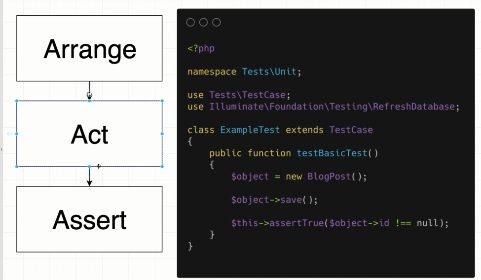
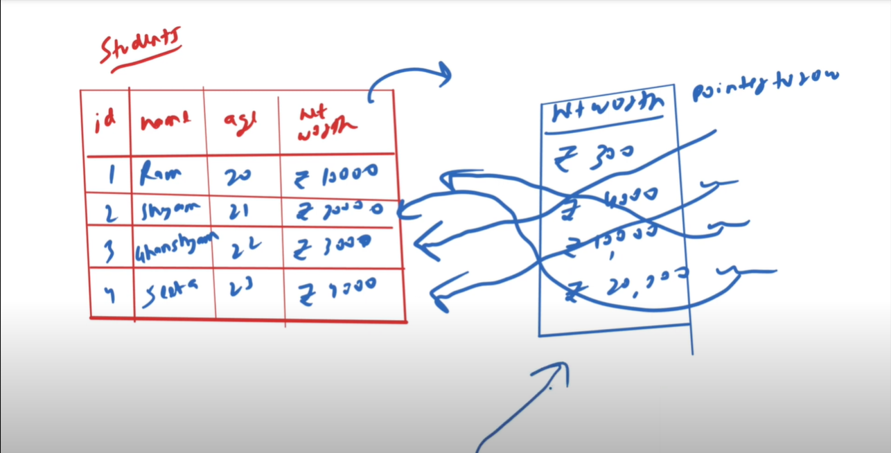
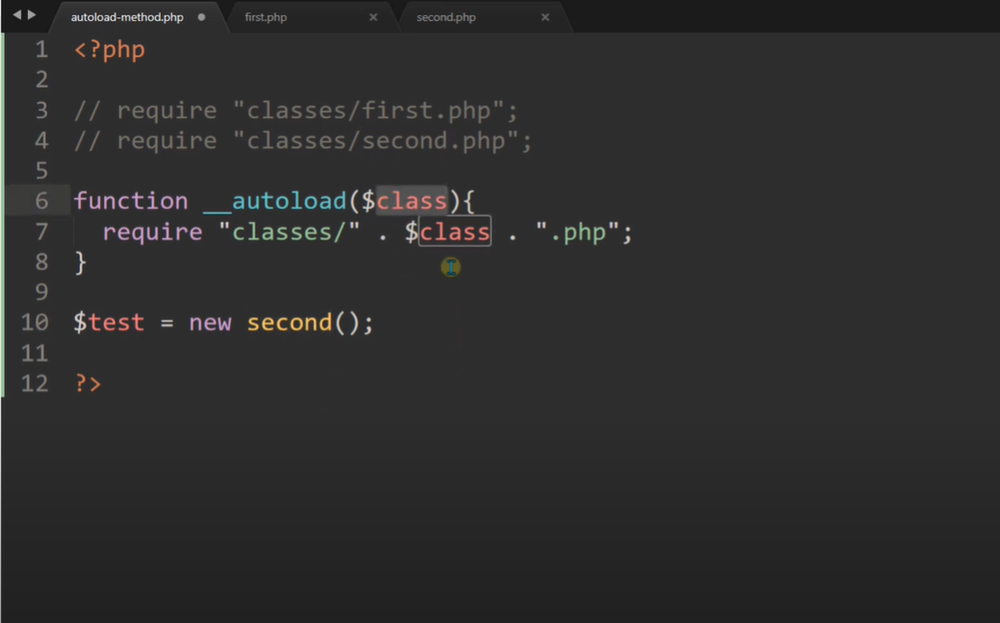
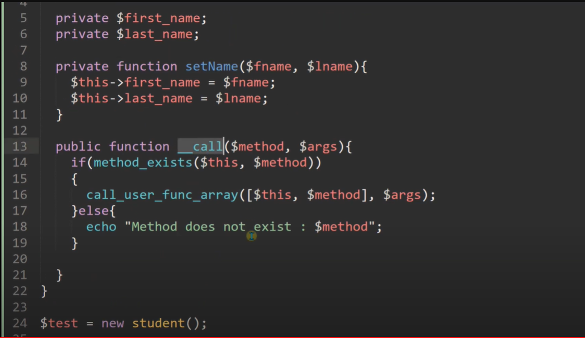
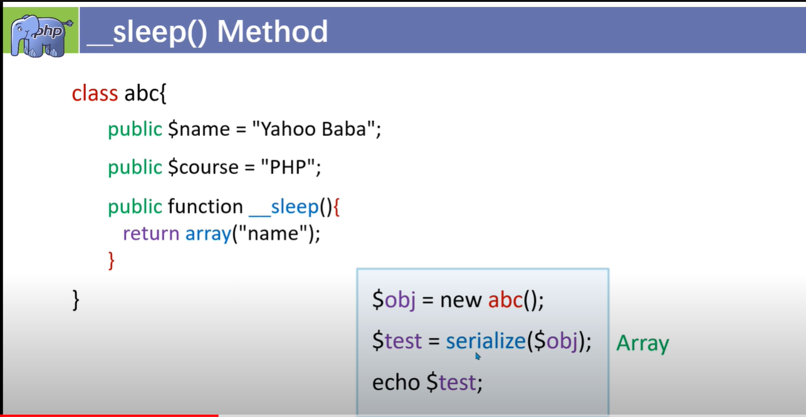
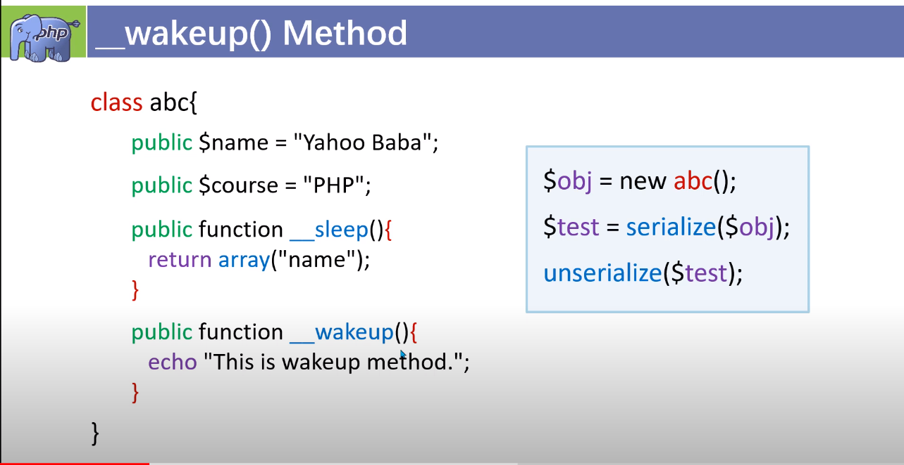
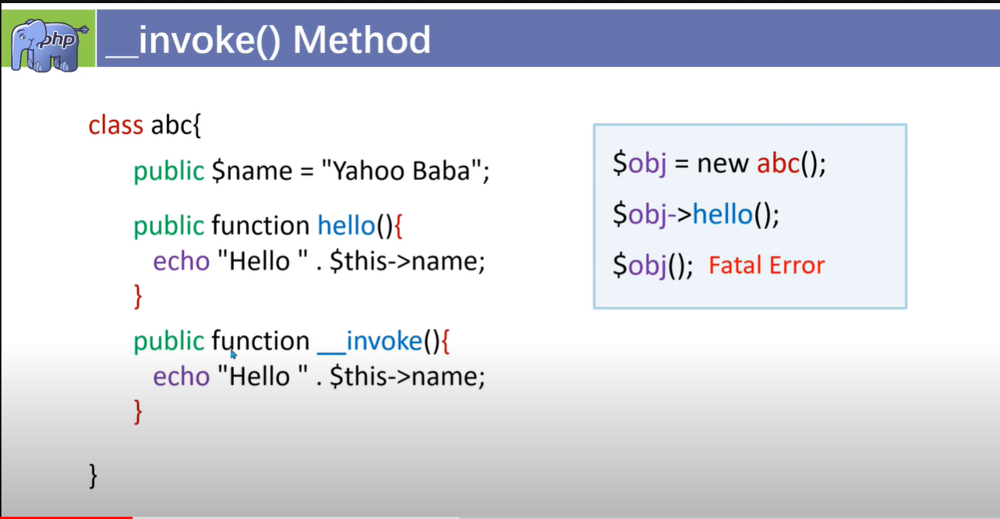
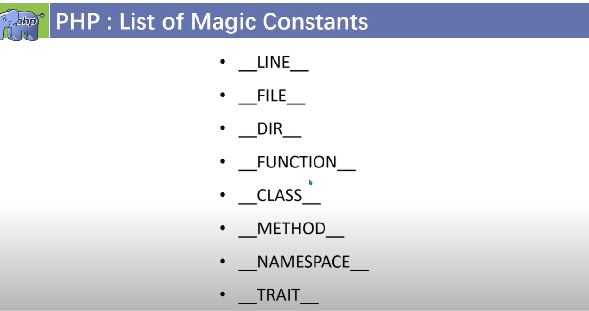
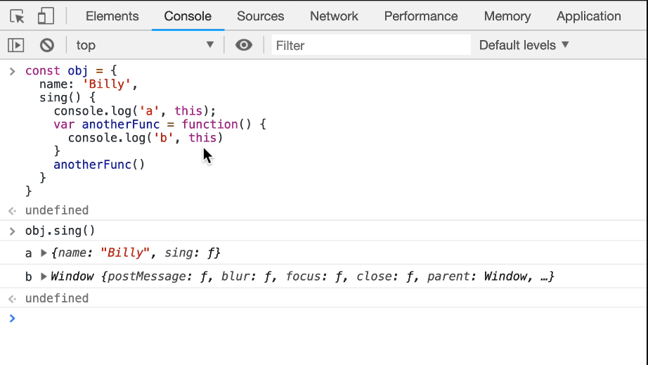

JS Engine

- Interpreter translate and read code line by line and convert code into bytecode.
- Compiler convert code into machine code.

- Parse code.
- Convert it into abstract systax tree.
- Then code goes to interpreter
- Then convert code into bytecode and bytecode is not as low level language as machine code.
- Profiler checks if there is anything to optimize and if any then interpreter hand over code to profiler.
- Profiler hand over the code to compiler.
- Compiler convert the code into low level machine code.
Chrome browser JS Engine
- Chrome browser uses V8 as JS Engine.
- V8 engine uses JIT( Just In Time ) compiler.
Optimize code (webAssembly)

- WebAssembly is binary executable format.
- It compiles code to webAssembly which is executable.
- So it can execute the code fast directly in the browser and no need to go to Js engine.
Call Stack and Memory Heap

- Memory heap is used to store code.
- Call stack is used to track code and then execute code.
- Call stack keeps track of the code.
- Call stack use last in first out.
- Simple variable can be stored in call stack.
- Complex data structure like object, array, function is stored in memory heap.
stack overflow
- Stack overflow happen if we use a function inside the same function as nested function.
- Stack overflow happen because of recursion.
Garbage Collection
- Js is garbage collected language.
- Js garbage collection use mark and sweap algorith.
- After the use of ( var, func, obj ), js checks they have any use or not. If they have no use use js garbage collector removes them
Memory Leaks
- Too many global variable.
- Too many event listener.
- use of setinterval() or something like this.
Memory leaks happens because of
Single Thread
- Js is a single threaded language.
- It has one call stack and heap memory to execute tasks/code at a time.
- Js engine runs code synchronously.
- But in real we do not use js engine only.
- We use js runtime environment to execute code asynchronously which is provided by browser.
Javascript Runtime
- Web browser is running in the background while synchronous js code is running.
- Web browser is using web api, which communicate with js engine.
- Web browser provides web api, which can be used by js engine.
- Web browser uses low level programming language (c++) to create web api like ( fetch(), setTimeout(), window() ... ).
- If anything comes to call stack which belongs to web api, call stack transfer this to web api.
console.log("1");
setTimeout(() => { console.log("2"); }, 1000);
console.log("3");
// output:
1
3
2
Node Js ( Javascript Runtime )
- Web browser uses window object for all web api.
- Node js use global object for all web api.
- When Node js gets request it transfer the code to the async block.
Execution Context
- When we run js code in js engine it creates a global execution context and add it to the call stack.
- First it creates global execution context window object ( window => browser, global => node ).
- Then it creates this object.
- Every time js engine see a function it creates a execution context for function on top of global execution context and add in call stack.
Lexical Environment or Laxical Scope

- Lexical Environment is where variable and functions are defined, inside or outside of a scope.
- Lexical scope determines available variables.
- Lexical scope does not determine where the function is called.
- Firtst lexical environment is global lexical environment.
Hoisting
- Hoisting is var and function are moved at the top of everything before execution.
- var and function are not move at the top physically actually.
- when js engine see var and function it allocates memory for them first.
- Hoisting is not work for es6 syntax let and const.
- var is hoisted as undefined, it not defined yet.
- function is executed in time of hoisting because function is called immediately.
- Hoisting happens on every execution context.
- Every time js engine run a function a execution context is created.
Function Invocation

- function expression is defined at run time, when we run or call or execute the function.
- function declaration is defined at parse time, when compiler parse the code, then hoisting happens and allocates memory.
Function Arguments


- function arguments is not good to use, because it is not optimizable.
- Instead we can use Array.from(arguments) to convert it as an array.
- Another way is we can use spread oparator( ... ) to access arguments.
Scope Chain

- function can access global or parent scope variable through scope chain.
this

- (this) is not laxically scoped.
- (this) is dynamically scoped.
- it does not depend on where it is called from.
- it depends on how it is called.